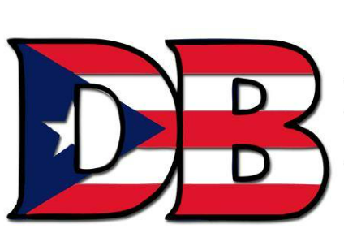
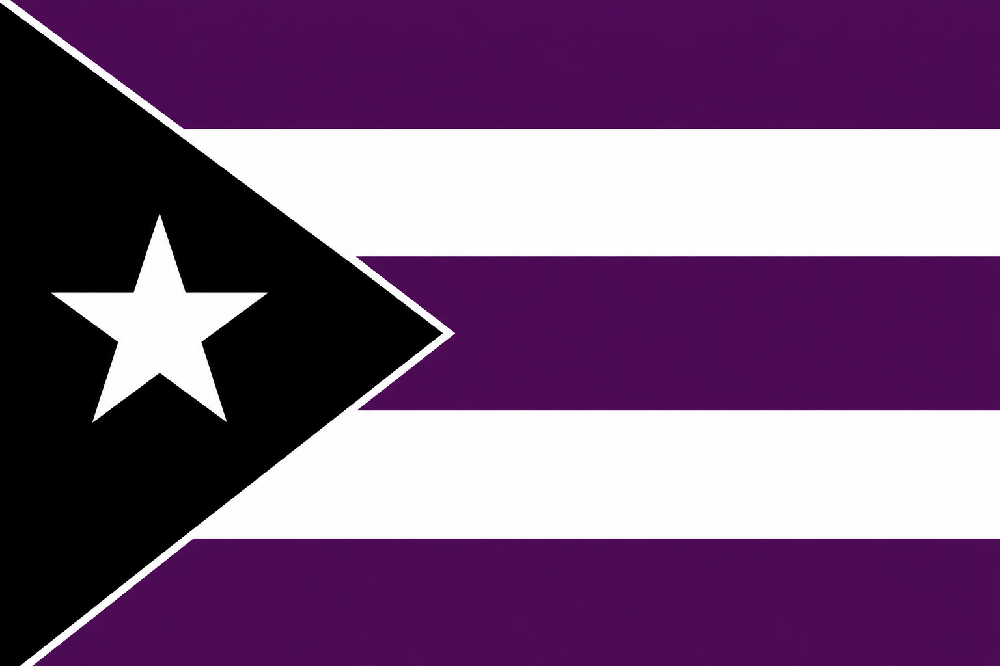

Our Mission
Despierta Boricua exists as Yale's Puerto Rican cultural group to elevate, empower, and unite the Puerto Rican community — celebrating our rich heritage, confronting injustice, and crafting a future where our voices are heard and our dignity is upheld.
Our History
Despierta Boricua was founded in the fall of 1971 by a group of working-class, mostly New York-based Puerto Rican men who believed Yale had a responsibility to its Puerto Rican students — and was failing to meet it. The organization's name invoked the rallying cry of the Young Lords: "Despierta Boricua, y defiende lo que tuyo" — Wake up, Boricua, and defend what is yours.
The founding members were Eduardo Padró, a freshman from East Harlem; Manuel Del Valle, a law student and Princeton alumnus who had already established the first Puerto Rican and Latiné organization in the Ivy League at Princeton; Cruz Ramos, a freshman from the Bronx; Gilberto "Gilbert" Casellas, a sophomore from Tampa; Hector Medina, a junior from the Lower East Side; and Martín-José Sepúlveda, a transfer student from Wesleyan University and East Harlem native. Together, they built something that had never existed at Yale before.
Their first public action came in November 1971, challenging the lack of Puerto Rican and Latiné admissions to Yale Law School. In February 1972 — then operating as Boricuas Unidos — DB sent an open letter to President Kingman Brewster Jr., condemning Yale's indifference to mainland Puerto Rican students. In a student body of 9,300, just eight were mainland Puerto Ricans. On April 5, 1972, DB took their protest to the Yale Club of New York, with Nuyorican Congressman Herman Badillo showing up in solidarity. The protest generated results: the incoming class of 1976 included 22 mainland Puerto Ricans — the largest number Yale had admitted to that point.
DB understood that getting Puerto Rican students to Yale was only half the battle.

In 1972, they established PROP — the Puerto Rican Orientation Program — to support incoming students through the academic and cultural transition into Yale, particularly those from under-resourced inner-city public schools. PROP proved so effective that Yale expanded it the following year to all minoritized students, renaming it the Pre-Registration Orientation Program. Within five years, minoritized students collectively made up 16.5% of total admissions at Yale. Puerto Rican students had built something Yale then claimed as its own.In 1973, DB formally demanded that President Brewster provide a Puerto Rican cultural center on campus — a space for students and for New Haven's growing Puerto Rican community alike. When Brewster's administration stalled, DB escalated. Per oral tradition, members occupied Brewster's office one evening, covering themselves in chains and locking the door, refusing to leave until he committed to their demand. In 1976, Brewster agreed. DB secured 301 Crown Street and established Casa Boricua — a fully institutional Puerto Rican cultural center, on par with the AFAM house and the Chicano house, and the first of its kind in the Ivy League.
Through the 1980s and 1990s, Casa Boricua remained a vital anchor for Puerto Rican students at Yale. When Dean Richard Brodhead questioned whether cultural houses were necessary at all, DB and allied student organizations mobilized to protect the structures their communities had built. In 1999, after strategic deliberation, DB and MEChA negotiated a merger of their respective houses. The building was renamed La Casa Cultural Julia de Burgos — a compromise name that could represent both communities, honoring the Afro-Puerto Rican independentista poet whose fierce nationalism and feminist resistance made her the ideal figurehead for the shared space. As part of the agreement, MEChA received a mural on the side of the building. The first Puerto Rican cultural center in the Ivy League became Yale's pan-Latiné cultural center. The building kept its address. The community it served grew broader.
Today, Despierta Boricua continues as Yale's Puerto Rican student organization, affiliated with La Casa Cultural Julia de Burgos at 301 Crown Street. We carry forward the commitments of our founders: to fight for Puerto Rican presence at Yale, to build community across the diaspora, and to ensure that Yale remains accountable to the city of New Haven and to the Puerto Rican people.
History research by Amanda Rivera, Yale University (Dissertation in Progress). Updated 2026.
Julia de Burgos & La Casa Cultural


Julia de Burgos and the purple flag symbolizing feminist resistance
Poet, Feminist, Revolutionary
Julia de Burgos (1914–1953) was an Afro-Puerto Rican poet, activist, and independentista whose work challenged colonialism, racial oppression, and patriarchy with equal force. Born in Carolina, Puerto Rico, she became one of the most celebrated voices in Latin American literature — and a symbol of Puerto Rican resistance and identity.
When DB fought to establish a Puerto Rican cultural center at Yale in the 1970s, they named it La Casa Cultural Julia de Burgos — not only to honor her legacy, but to declare what kind of space it would be: one rooted in resistance, community, and unapologetic Puerto Rican pride. La Casa opened in 1976 as the first Puerto Rican cultural center in the Ivy League and the first building at Yale named for a person of color.
La Casa Cultural Julia de Burgos
301 Crown Street, New Haven, CT
The Founding Generation
Six students who changed Yale forever — and built the first Puerto Rican cultural center in the Ivy League.

Eduardo Padró
East Harlem · Class of 1975

Manuel Del Valle
Law School · 1971

Gilberto Casellas
Tampa · Class of 1974
Cruz Ramos
The Bronx · Class of 1975
Hector Medina
Lower East Side · Class of 1973
Martín-José Sepúlveda
East Harlem · Transfer from Wesleyan
Our Values
Community
Building strong connections within the Yale Puerto Rican community and beyond.
Justice
Advocating for social and political equity for Puerto Ricans and all marginalized groups.
Education
Promoting knowledge and understanding of Puerto Rican history, culture, and current issues.
Activism
Taking meaningful action to create positive change both on campus and in wider society.
Cultural Experience
"La brega" is a uniquely Puerto Rican concept that embodies resourcefulness, resilience, and the ability to navigate life's challenges with creativity. It's an essential part of Puerto Rican cultural identity, especially in the face of adversity.
Join Our Community
Be part of our ongoing mission to elevate Puerto Rican voices and create meaningful change.